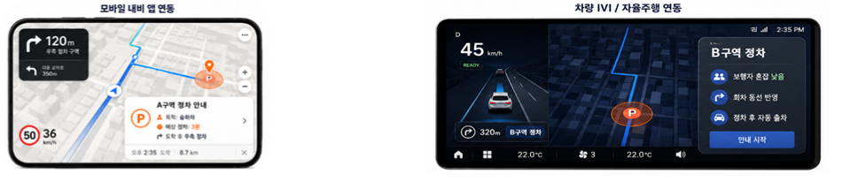

◎
혼잡
목적지 주변에 차량이 몰리면
승하차와 정차가 동시에 혼선됩니다.
끼긱은 목적지 전면부의 정차 후보를 비교해,
차량 유형과 현장 조건에 맞는 정차 위치를 추천하는 B2B 모빌리티 API·SDK를 제공합니다.
목적지 주변에 차량이 몰리면
승하차와 정차가 동시에 혼선됩니다.
내비게이션은 도착까지 안내하지만,
실제 정차 위치는 운전자 판단에 남습니다.
횡단보도, 좁은 도로, 시야 조건에 따라
정차 위험도는 크게 달라집니다.
정차 후보와 실제 이용 결과가
구조화되지 않아 같은 판단이 반복됩니다.

간단한 연동으로, 스마트한 정차 경험을.
끼긱의 API MVP는 목적지와 차량 조건을 입력받아 후보 정차구역의 위험도를 계산하고, 가장 적합한 후보를 반환하는 구조로 검증 중입니다.
POST /recommend
{
"destination_id": "D001",
"vehicle_type": "passenger"
}{
"destination_id": "D001",
"recommended_candidate_id": "C001",
"risk_score": 0,
"walking_distance_m": 18,
"reason": [
"Lowest calculated risk score among available candidates"
]
}도착 후 실제 정차 위치까지 이어지는
라스트 100m 정보 제공
택시·호출·물류 등 다양한 이동 서비스에
승하차·픽업 지점 추천
시설 전면부 정차 후보와 운영 정책을 잇는
데이터 레이어 제공
차량 화면에서 활용 가능한
정차 추천 API·SDK 확장